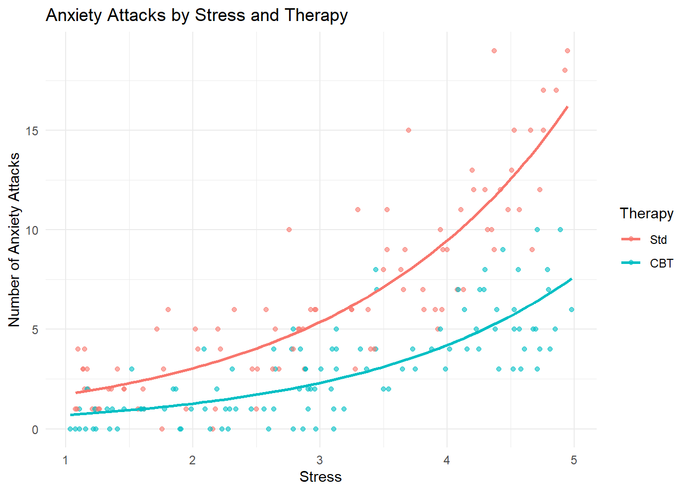

We use a Poisson distribution when modeling count data, in particular events that are rare, independent, and occur over a fixed observation window (time, space, etc.).
Some key characteristics:
Discrete Events: The number of events is a count (0, 1, 2, …)
Lower Bound: Negative counts are not possible (i.e., we do not have -1 events ;))
Randomness: Events occur independently and randomly
Constant Rate: Events happen at a constant average rate over time or space
No Simultaneity: Two or more events do not occur at the exact same time.
The expected value (mean) is: \[
\mathbb{E}[Y] = \lambda
\]
The variance is also: \[
\text{Var}(Y) = \lambda
\]
This means that in the Poisson distribution, the mean and the variance are equal.
In Poisson regression, we model the mean count \(\lambda\) as a function of predictors using the log link:
To interpret the coefficients, we exponentiate the values of \(\beta\): \[
\exp(\beta_j)
\]
This gives a rate ratio: it tells us how many times higher (or lower) the expected number of events is for a one-unit increase in the predictor \(X_j\), holding all else constant.
Simulated example
We simulate a dataset in which the number of anxiety attacks experienced by individuals over a four-week period are reported. The primary objective is to model the count data using Poisson regression, considering two predictors:
Therapy: patient randomized to special CBT treatment or Std treatment (CBT or Std).
This ensures that \(\lambda > 0\) for all values of the predictors, which is a key requirement for count data. The exponential transformation gives us the expected number of events:
ggplot(d, aes(x = Stress, y = Attacks, color = Therapy)) +geom_point(alpha =0.6) +geom_smooth(method ="glm", method.args =list(family ="poisson"), se =FALSE) +labs(title ="Anxiety Attacks by Stress and Therapy",x ="Stress",y ="Number of Anxiety Attacks",color ="Therapy" ) +theme_minimal()

The model
The simulated data model the number of anxiety attacks experienced by individuals based on their stress and their therapy condition. The number of attacks is a count variable, therefore we use Poisson regression!
We fit a generalized linear model (GLM) with the Poisson family and a log link function, assuming the following form:
Intercept (\(\beta_0\)): Represents the log-mean number of anxiety attacks when both predictors are at zero.
Stress (\(\beta_1\)): A positive value indicates that as perceived stress increases. For example, if \(\beta_1 = 0.5\), then a one-unit increase in stress corresponds to a \(e^{0.5} \approx 1.65\) increase in expected attacks.
Therapy (\(\beta_2\)): A negative coefficient suggests that therapy is associated with fewer anxiety attacks, holding stress constant. If \(\beta_2 = -0.8\), the special CBT reduces the expected attack rate by about \(e^{-0.8} \approx 0.45\), or a 55% reduction.
Statistics mumbo-jumbo
Why Poisson?
Counts like anxiety episodes are non-negative integers with potentially skewed distributions. Using linear regression would violate assumptions of normality and homoscedasticity and might predict impossible negative values.
Log-link intuition
The log link allows the model to predict only positive expected counts.
Overdispersion
It is important to check for overdispersion (i.e., when variance > mean), which is common in psychological data. If present, a negative binomial model might be more appropriate.
TRUE and FALSE
If the coefficient for therapy is negative, then receiving therapy decreases the expected number of anxiety attacks.
The Poisson model assumes that the variance of the outcome is always greater than the mean.
If the model shows overdispersion (variance > mean), a negative binomial model may be more appropriate.
In Poisson regression, the expected count is modeled as a log-linear function of the predictors.
The exponentiated coefficients in a Poisson regression model represent rate ratios.
It is appropriate to include both continuous and categorical predictors in a Poisson regression model.
Source Code
---title: "Applied example for Poisson Regression"author: "Irene Alfarone"date: "2025-05-06"format: html: toc: true code-fold: true code-tools: true df-print: pagedexecute: echo: true warning: false message: false---## Introduction### Poisson regressionWe use a Poisson distribution when modeling count data, in particular events that are rare, independent, and occur over a fixed observation window (time, space, etc.).Some key characteristics:- **Discrete Events**: The number of events is a count (0, 1, 2, ...)- **Lower Bound**: Negative counts are not possible (i.e., we do not have -1 events ;))- **Randomness**: Events occur independently and randomly- **Constant Rate**: Events happen at a constant average rate over time or space- **No Simultaneity**: Two or more events do not occur at the exact same time.- The **expected value** (mean) is:\ $$ \mathbb{E}[Y] = \lambda $$- The **variance** is also:\ $$ \text{Var}(Y) = \lambda $$This means that in the Poisson distribution, the **mean and the variance are equal**.In Poisson regression, we model the mean count $\lambda$ as a function of predictors using the log link:$$\log(\lambda) = \beta_0 + \beta_1 X_1 + \dots + \beta_k X_k$$To interpret the coefficients, we exponentiate the values of $\beta$:\$$ \exp(\beta_j) $$This gives a **rate ratio**: it tells us **how many times higher (or lower)** the expected number of events is for a one-unit increase in the predictor $X_j$, holding all else constant.### Simulated exampleWe simulate a dataset in which the number of anxiety attacks experienced by individuals over a four-week period are reported. The primary objective is to model the count data using Poisson regression, considering two predictors:- **Therapy**: patient randomized to special CBT treatment or Std treatment (`CBT` or `Std`).- **Stress**: continuous outcome variable, representing perceived stress.We aim to assess how therapy and stress levels influence the frequency of anxiety attacks.## Data Simulation```{r}library(ggplot2)library(dplyr)library(MASS)set.seed(2025) N =200Therapy =rbinom(N, 1, 0.5)Stress =runif(N, min =1, max =5)lambda =exp(0.2+0.5* Stress -0.8* Therapy)Attacks =rpois(N, lambda)d =data.frame(Attacks = Attacks,Therapy =factor(Therapy, labels =c("Std", "CBT")),Stress =round(Stress, 2))head(d)```In a Poisson regression model, the outcome variable $Y$ (e.g., number of anxiety attacks) is assumed to follow a Poisson distribution:$$Y \sim \text{Poisson}(\lambda)$$where $\lambda$ is the expected count (i.e., $\mathbb{E}[Y]$), and must be strictly positive.### The Log Link FunctionPoisson regression uses the logarithmic link function to relate the predictors to the mean of the distribution:$$\log(\lambda) = \beta_0 + \beta_1 \cdot \text{Stress} + \beta_2 \cdot \text{Therapy}$$This ensures that $\lambda > 0$ for all values of the predictors, which is a key requirement for count data. The exponential transformation gives us the expected number of events:$$\lambda = \exp(\beta_0 + \beta_1 \cdot \text{Stress} + \beta_2 \cdot \text{Therapy})$$```{r}ggplot(d, aes(x = Stress, y = Attacks, color = Therapy)) +geom_point(alpha =0.6) +geom_smooth(method ="glm", method.args =list(family ="poisson"), se =FALSE) +labs(title ="Anxiety Attacks by Stress and Therapy",x ="Stress",y ="Number of Anxiety Attacks",color ="Therapy" ) +theme_minimal()```## The modelThe simulated data model the number of anxiety attacks experienced by individuals based on their stress and their therapy condition. The number of attacks is a **count variable**, therefore we use Poisson regression!We fit a generalized linear model (GLM) with the **Poisson family** and a **log link** function, assuming the following form:$$\log(\mathrm{Attacks}_i) = \beta_0 + \beta_1 \cdot \text{Stress}_i + \beta_2 \cdot \text{Therapy}_i$$Here:- $\mathrm{Attacks}_i$ is the expected number of anxiety attacks for individual $i$,- `Stress` is a continuous predictor,- `Therapy` is a binary categorical predictor (0 = Std, 1 = CBT).```{r}m =glm(Attacks ~ Therapy + Stress, family = poisson, data = d)summary(m)exp(coef(m))``````{r}mnb =glm.nb(Attacks ~ Therapy + Stress, data = d)summary(mnb)exp(coef(mnb))```### Interpretation of Coefficients- **Intercept (**$\beta_0$): Represents the log-mean number of anxiety attacks when both predictors are at zero.- **Stress (**$\beta_1$): A positive value indicates that as perceived stress increases. For example, if $\beta_1 = 0.5$, then a one-unit increase in stress corresponds to a $e^{0.5} \approx 1.65$ increase in expected attacks.- **Therapy (**$\beta_2$): A negative coefficient suggests that therapy is associated with fewer anxiety attacks, holding stress constant. If $\beta_2 = -0.8$, the special CBT reduces the expected attack rate by about $e^{-0.8} \approx 0.45$, or a 55% reduction.### Statistics mumbo-jumbo- **Why Poisson?**\ Counts like anxiety episodes are non-negative integers with potentially skewed distributions. Using linear regression would violate assumptions of normality and homoscedasticity and might predict impossible negative values.- **Log-link intuition**\ The log link allows the model to predict only positive expected counts.- **Overdispersion**\ It is important to check for overdispersion (i.e., when variance \> mean), which is common in psychological data. If present, a negative binomial model might be more appropriate.### TRUE and FALSE- If the coefficient for therapy is negative, then receiving therapy decreases the expected number of anxiety attacks.- The Poisson model assumes that the variance of the outcome is always greater than the mean.- If the model shows overdispersion (variance \> mean), a negative binomial model may be more appropriate.- In Poisson regression, the expected count is modeled as a log-linear function of the predictors.- The exponentiated coefficients in a Poisson regression model represent rate ratios.- It is appropriate to include both continuous and categorical predictors in a Poisson regression model.